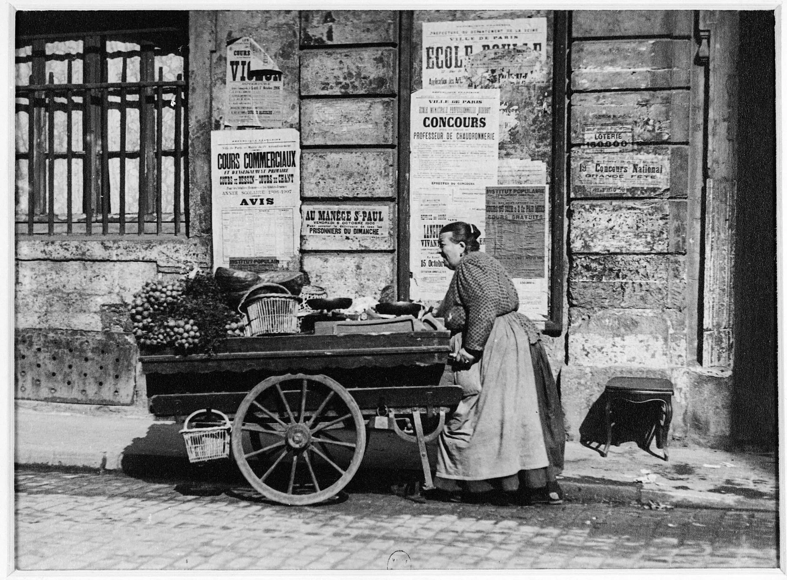
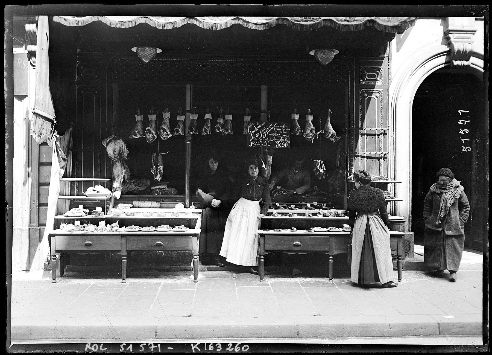

Affiner le calcul

Les magasins
Choisissez un magasin pour un calcul à son niveau de prix. L'économie indiquée correspond à vos courses, trajet compris.
Les écarts ce mois-ci
Prix en Suisse comparés aux prix moyens en France, convertis en francs.
Fruits et légumes : l'écart fond depuis 2022
Écart entre la Suisse et la France sur 14 fruits et légumes, depuis 2006. Au-dessus de zéro, la Suisse est plus chère.

Produit par produit
Touchez une ligne pour voir son historique.
| Fruits et légumes, 1 kg | Suisse | France | Écart |
|---|

La viande, le poste où l'écart reste énorme
En Suisse, un kilo de viande coûte en moyenne environ deux fois plus qu'en France. C'est le poste qui rend le trajet rentable.
| Viande, 1 kg | Suisse | France | Écart |
|---|
| Mêmes marques | Suisse | France | Écart |
|---|
| Carburant, 1 litre | Sans plomb | Diesel | Stations |
|---|

D'où viennent les chiffres
Sources
- Fruits et légumes, Suisse : Office fédéral de l'agriculture (OFAG), prix de consommation mensuels.
- Fruits, légumes, viande, France : INSEE, prix moyens de vente au détail.
- Viande et marques, Suisse : relevé mensuel du site Migros.
- Marques, France : Open Prices (Open Food Facts), tickets de caisse partagés.
- Niveau de prix de chaque magasin : comparateur des supermarchés de l'UFC-Que Choisir, publié avec son accord.
- Carburant : prix officiels des stations françaises ; tableau T 4.4 de l'OFDF pour la Suisse.
- Villes de départ et trajets : répertoire officiel des localités de swisstopo ; itinéraires OSRM sur OpenStreetMap.
- Change : taux de référence de la Banque centrale européenne.
Code, données et méthodologie complète sur GitHub. Mise à jour automatique le 20 de chaque mois.
Comment le prix d'un magasin est estimé
Que Choisir publie le prix du même panier d'une centaine de produits dans chaque magasin. On le compare à la médiane d'un échantillon de magasins tirés au hasard dans toute la France : un indice de 0,92 veut dire que le magasin est 8 % moins cher que le magasin français typique.
On applique cet indice aux prix moyens français, puis on compare à la Suisse. C'est une estimation : un magasin peut être bon marché en épicerie et plus cher en boucherie.
Comment le trajet est calculé
Distance routière la plus rapide entre le centre de votre localité et le centre de la ville choisie, calculée une fois par mois sur OpenStreetMap. Le coût compte l'aller et le retour au prix suisse de l'essence. Vous pouvez corriger la distance dans « Affiner le calcul ».
Limites
Les fruits et légumes suivent les saisons : la moyenne sur 12 mois est plus fiable qu'un mois isolé. Leur origine n'est pas contrôlée.
La viande suisse vient d'une seule enseigne (Migros). Pour les marques, quand Open Prices a moins de 5 relevés, le chiffre est indicatif.
Le taux de la BCE est interbancaire ; celui de votre carte est en général 1 à 2 % moins bon.
Douane suisse
- 150 CHF d'achats par personne et par jour en franchise. Au-delà, la TVA suisse est due sur tout le montant (2,6 % pour l'alimentation).
- Viande : 1 kg par personne et par jour en franchise.
- Alcool : 5 L sous 18 % vol., 1 L au-dessus. Tabac : 250 cigarettes.